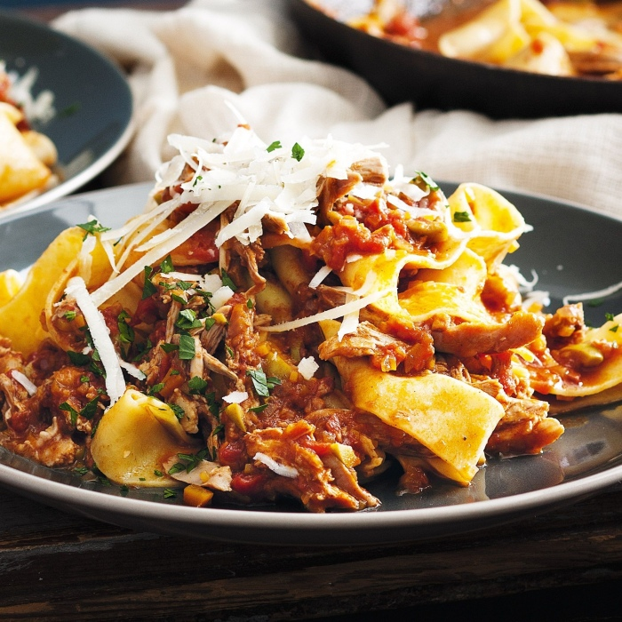

Cinnamon adds complexity to this slow-cooked pasta sauce, which goes perfectly with large tubular paccheri pasta, or ribbons of pappardelle

Price : 170/-
Nutrition:
kcal
fat
saturates
carbs
sugar
fibre
protein
salt
505
12g
2g
62g
8g
2g
30g
0.9g
Ingrediants: 1 tbsp olive oil,
4 duck legs,
2 onions, finely chopped
2 fat garlic cloves, crushed,
2 tsp ground cinnamon,
2 tsp plain flour,
250ml red wine,
2 x 400g cans chopped tomatoes,
1 chicken stock cube, made up to 250ml,
3 rosemary sprigs, leaves picked and chopped,
2 bay leaves,
1 tsp sugar,2 tbsp milk,
600g paccheri or pappardelle pasta,
parmesan, grated, to serve>
Method
Step 1:Heat the oil in a large pan. Add the duck legs and brown on all sides for about 10 mins. Remove to a plate and set aside. Add the onions to the pan and cook for 5 mins until softened. Add the garlic and cook for a further 1 min, then stir in the cinnamon and flour and cook for a further min. Return the duck to the pan, add the wine, tomatoes, stock, herbs, sugar and seasoning. Bring to a simmer, then lower the heat, cover with a lid and cook for 2 hrs, stirring every now and then.
Step 2:Carefully lift the duck legs out of the sauce and place on a plate – they will be very tender so try not to lose any of the meat. Pull off and discard the fat, then shred the meat with 2 forks and discard the bones. Add the meat back to the sauce with the milk and simmer, uncovered, for a further 10-15 mins while you cook the pasta.
Step 3:Cook the pasta following pack instructions, then drain, reserving a cup of the pasta water, and add the pasta to the ragu. Stir to coat all the pasta in the sauce and cook for 1 min more, adding a splash of cooking liquid if it looks dry. Serve with grated Parmesan, if you like.